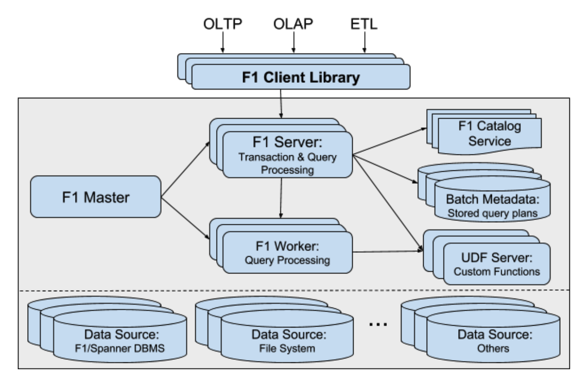
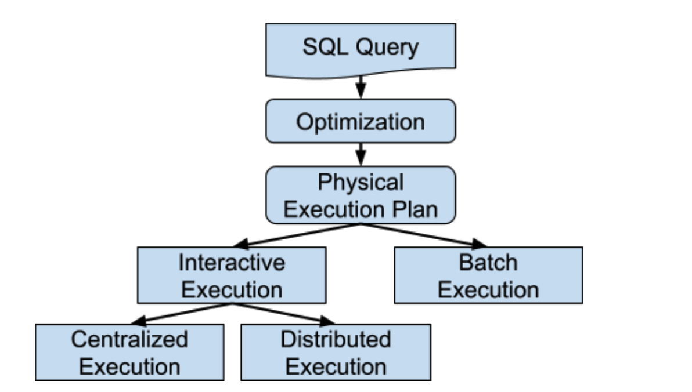
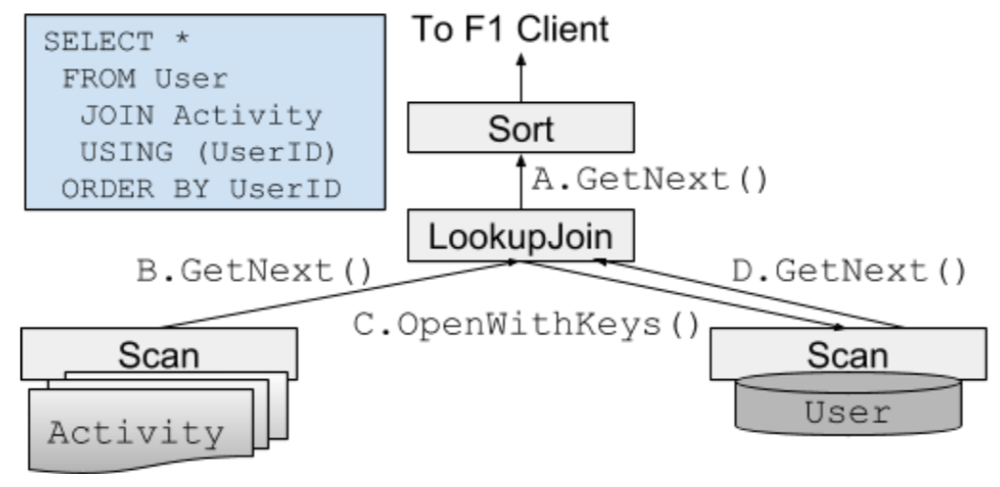
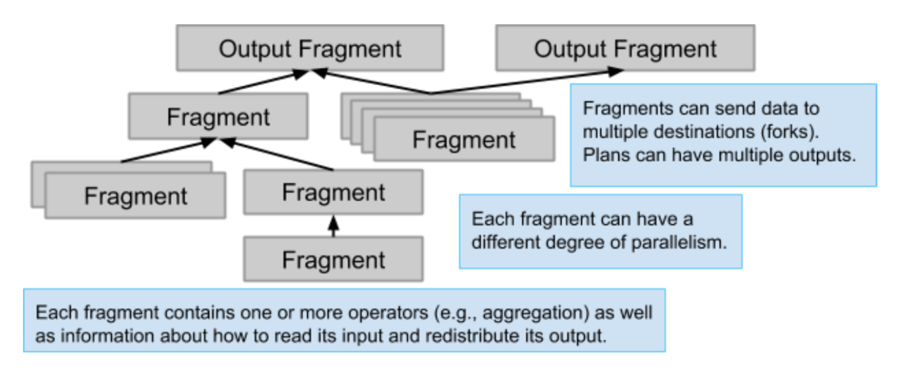
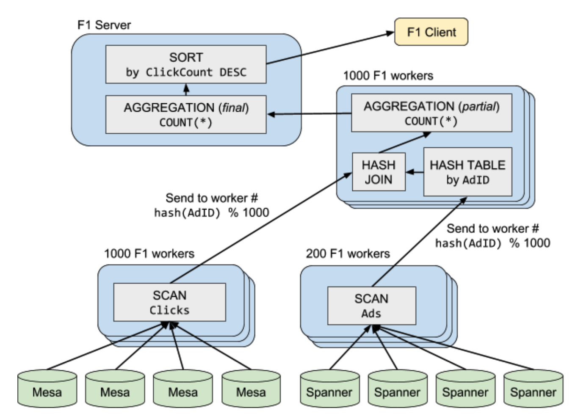
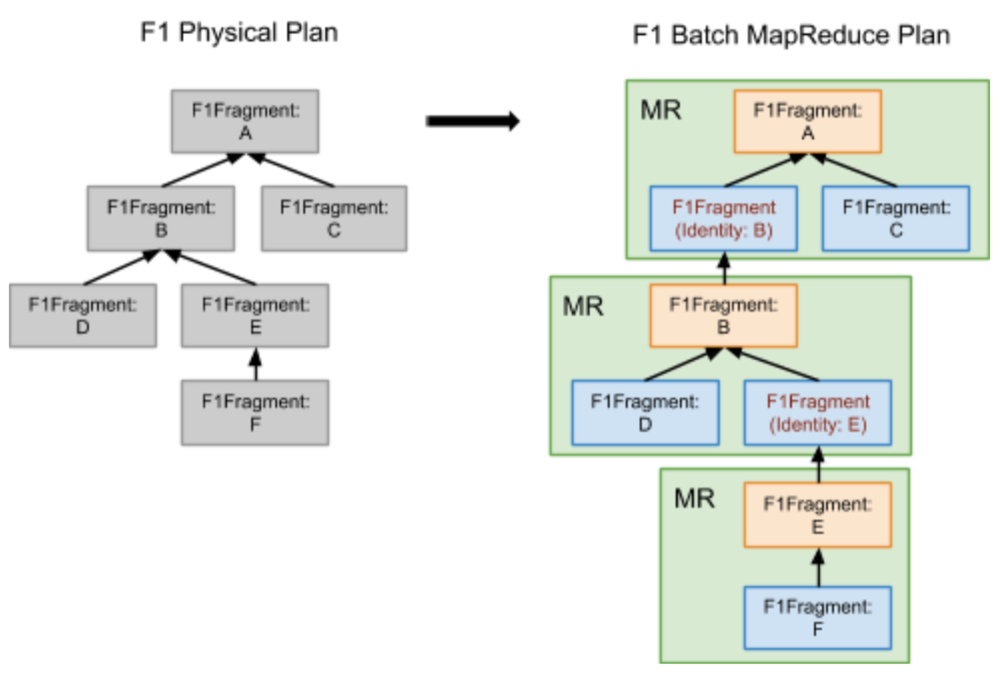
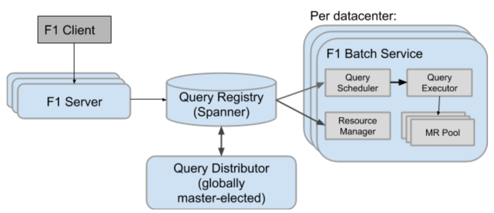
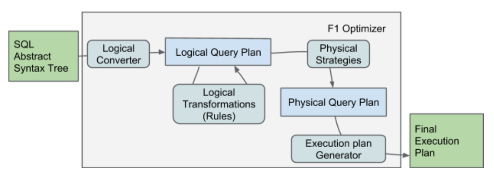
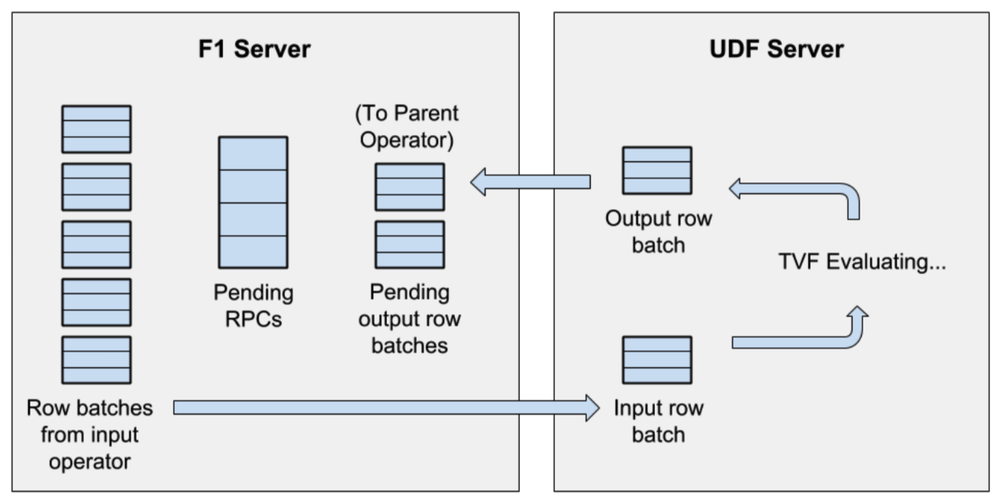
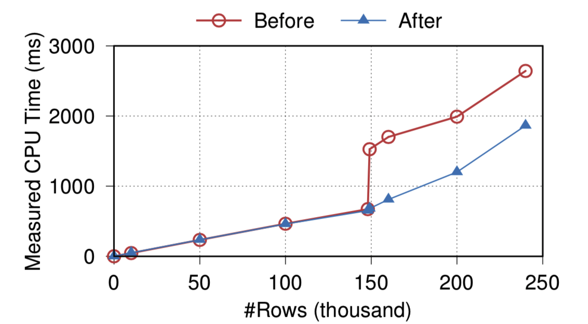

F1 Query：大规模数据的声明式查询
摘要
F1 Query 是一套独立的，联合的查询处理平台，可以对 Google 保存在不同文格式和不同存储系统中的数据进行查询（例如：Bigtable、Spanner、Google 电子表格等）。F1 Query 消除了维护不同类型数据处理负载传统的差异化需求。主要是通过同时支持下面的需求来实现：
- OLTP 风格点查询，这种查询仅影响几行数据；
- 大规模数据的低延迟 OLAP 处理请求；
- 大型 ETL 管道。(Extract-Transform-Load)
F1 Query 通过启用与自定义业务逻辑集成的声明性查询，还显著减少了开发硬编码数据处理流水线的需求。F1 Query 在 Google 内部满足了期望很高的关键需求：
- 提供了对碎片化并分布在多个数据源上的数据的 统一视图；
- 利用数据中心资源进行 高性能和低延迟 的查询处理；
- 通过增加计算并行性为大数据集提供 高可扩展性 ；
- 是可扩展的，并使用创新方法在声明性查询处理中集成复杂的 业务逻辑 。
本文介绍了 F1 Query 的端到端设计。F1 Query 从 F1 演变而来，F1 是最初用于管理 Google 广告数据的分布式数据库，F1 Query 已经在生产环境使用多年，并且服务于大量用户和系统的查询需求。
1. 引言
在像 Google 一样的大型公司中，数据处理和分析的使用场景有各种各样如数据量、延迟、数据源和接收器、新鲜度以及自定义业务逻辑方面不同的需求。许多数据处理系统聚焦于这些需求中的某一个特定方面，例如事务查询，中等规模的 OLAP 查询，或者大型 ETL 管道。一些系统是高度可扩展的，但是有些并不能扩展。一些系统主要作用于封闭式数据孤岛，但是其他的可以很容易地从其它数据源拉取数据。一些系统查询在线数据，一些必须摄取数据才能有效查询。
在这篇文章中，我们介绍 F1 Query，一个独特的 SQL 查询引擎，这个查询引擎并不仅仅是满足单个方面，相反，其目标是覆盖企业级数据处理和分析的所有场景。F1 Query 有效地模糊了事务、交互和批处理负载之间的区别，通过提供如下功能来覆盖许多场景：
- OLTP 点查询，仅仅影响几行记录
- 低延迟的针对大规模数据的 OLAP 查询
- 大型 ETL 管道将来自不同数据源的数据转换并混合到支持复杂分析和报告工作负载的新表中
F1 Query 通过启用与自定义业务逻辑集成的声明性查询，显着减少了开发硬编码数据处理流水线的需求。因此，F1是一个万能的查询系统，可以支持绝大多数用于企业数据处理和分析的场景。
F1 Query 从 F1 [55] 演变而来，F1 是一个分布式关系型数据库用于管理 Google 内部的关键收益的广告数据，其中包含了存储层以及用于处理 SQL 查询的引擎。在早期阶段，这个引擎执行对存储在两个数据源 spanner [23, 55] 和 Mesa [38]上的数据进行 SQL 查询。现在，F1 Query 可以一个可以独立运行，综合的查询处理平台，可以对存储在不同文件格式中的数据以及不同的远程存储系统（例如，Google Spreadsheets，Bigtable [20]）中的数据进行执行声明式查询。F1 Query 已经变成了众多关键应用程序的首选查询引擎，包括广告、购物、分析以及付款。这种动力背后的驱动力来自F1 Query的 灵活性，支持大小用户，简单或高度定制的业务逻辑，以及支持数据所在的任何数据源。我们在很多方面注意到，F1 Query 重新实现了存在于商业数据库管理系统中的功能。其共享了 Dremel [51] 的很多设计，Dremel 是一个 Google 的查询引擎，主要做了很多分析类查询的优化。F1 Query 带给技术领域的主要创新是其如何结合这些想法，展示了在现代数据中心架构和软件栈中，可以完全从数据存储中分解查询处理，并为所有场景提供服务。
在这篇文章中，主要讨论 F1 Query 的整体设计。下面的关键需求影响了整体架构：
数据碎片：Google提供了许多数据管理选项，可以满足各种通常还是相互矛盾的需求，包括复制，延迟，一致性等。最终的结果就是，甚至一个应用的底层数据都是碎片化地保存在不同的存储系统中，一些保存在关系型 DBMS 引擎（spanner）中，一些保存在键值存储中（Bigtable），还有一些则是以各种文件格式保存在分布式文件系统中。F1 Query 需要满足对这些存储系统中数据的分析，并且提供跨各个孤岛的 统一数据视图 。
数据中心架构：F1 Query 是针对数据中心构建的，而不是独立的服务器或者紧耦合的集群。这个设计抽象从根本上将其与经典的无共享 [57] 数据库管理系统区别开来，无共享数据库通常是尝试将数据的计算和处理始终保持在数据所在位置。此外，经典范式将数据库存储子系统与查询处理层紧密耦合，通常共享内存管理，存储布局等。相反，F1 Query 将数据库存储系统从查询处理中解耦，最后的结果就是，其可以作为一个引擎给数据中心的所有数据提供服务。在 Google 数据中心网络的先进性 [56] 在很大程度上消除了访问本地数据与远程数据的吞吐量和延迟差异，至少对于驻留在二级存储系统中的数据而言是这样。在我们的环境中，本地磁盘既不是争用点也不是吞吐瓶颈，因为所有的数据以小块(chunk)的方式分布到 Colossus 文件系统中（GFS [33] 的后继者）。类似地，远程数据管理服务例如 Spanner 也广泛分布，不会对争用敏感，这得益于均衡访问模式。尽管有这些技术进步，但即使在受控的数据中心环境中，对底层数据源的请求延迟也会受波动的影响，减缓这些波动是 F1 Query 很重要的挑战之一。
可伸缩性：客户需求差异很大，不仅仅在于正在处理的数据集的大小，还在于延迟和可靠性要求以及可允许的资源成本。在 F1 Query 中，短查询被一个单节点执行，而较大的查询在低开销的分布式执行模式下执行，没有检查点，仅有有限的可靠性保证。最大的查询在可靠的面向批处理的执行模式运行，该模式使用 Map-Reduce 框架[26]。在这些模式的每一种模式中，F1 Query 通过增加用于查询处理的计算并行性来减轻数据大小的高延迟。
可扩展性：客户应能够使用 F1 Query 完成任意的数据处理需求，包括哪些用 SQL 不容易表达的数据，还包括需要以新的模式访问的数据。为了满足这个需求，F1 Query 是高度可扩展的。它支持用户定义的函数（UDF），用户定义的聚合函数（UDA），和表值函数（TVF）来将本机代码编写的复杂的业务逻辑集成到查询执行中。
这篇文章的其余部分，我们给出了 F1 Query 的端到端设计。首先在第2节给出了 F1 Query 架构的概述，然后在第3节我们将深入这个执行内核和交互执行模式，第4节我们给出基于 Map-Reduce 的批量执行模式。在第5节，我们描述了 F1 Query 的优化器，第6节包括各种可扩展选项。第7节包括一些高级主题，避免断崖式执行和结构化数据处理。在第8节中介绍了生产环境指标，第9节介绍了相关工作，第10节是结束语。
2. F1 Query 概述
架构：F1 Query 是一个联合查询引擎，支持 OLTP、OLAP 和 ETL 负载。图1描述了基本的架构，在单个数据中心内部组件之间的交互流程。用户通过客户端库发送请求与 F1 Query 进行交互，客户端库将请求发送到我们在上下文中称之为 F1 服务器的几个专用服务器之一。F1 Master 是一个特殊的节点，主要负责运行时查询执行的监控和所有 F1 服务器的维护。小查询和事务会立即在接受到请求的 F1服务器上立即执行。F1 通过动态地从线程池配置执行线程来分布式执行调度更大的查询。最大的查询以可靠的批处理的执行模式调度执行，批处理执行使用了 MapReduce 框架。最终的结果在 F1 Server 上汇总并返回给客户端。F1 servers 和 workers 通常是无状态的，允许一个客户端每次和一个专用的 F1 服务器通信。由于 F1 servers 和 workers 不存储数据，增加新的 F1 servers 和 workers 不会触发任何数据重分布。因此在一个数据中心 F1 Query 部署可以很很容易地增加更多的 server 和 worker 进行横向扩展。

查询执行：用户通过客户端库和 F1 Query 进行交互。一次客户端查询请求会到达许多 F1 服务器中的一个，请求到达 F1 服务器之后，F1 服务器首先会解析、分析 SQL 查询，然后抽取出查询访问的所有数据源和接收器的列表。如果任何数据源或者接收器在本地数据中心不可用，并且有 F1 服务器更接近于数据源和接收器，F1 服务器会发送请求应答给客户端，请求中携带可用的一个数据中心集合来运行查询。客户端重新发送请求给目标数据中心 F1 服务器执行。值得注意的是虽然存储和计算是分离的，高速网络结构消除了数据中心内的许多位置问题，但是从地理上分布的许多数据中心中选择一组接近数据的数据中心仍然会对查询时延产生很大的影响。
查询执行从 F1 服务器上的一个规划阶段开始，这个阶段是优化器将分析查询抽象语法树转换为一个关系代数操作的 DAG，然后进行了逻辑和物理层优化。最后的执行阶段被传递给执行层。根据客户端指定的模式选择，F1 Query 在 F1 server 和 worker 上执行交互式或者批量模式的查询，如图2所示。

对于交互式执行，查询优化应用启发式来选择单节点中心执行和分布式执行。在中心化执行时，服务器在第一个接受到请求的 F1 服务器上立即进行分析，规划和执行查询。在分布式模式中，第一个 F1 服务器扮演了查询协调的角色。服务器调度任务到分开的 worker 上，然后这些 worker 会同时执行查询。交互式执行模式为小的和中等规模的查询提供了良好的性能和高效的资源。
批量模式为长时间运行处理大容量数据的查询提供了增强的可靠性。F1 服务器在单独的执行存储库中存储了批处理模式下运行的查询计划。批处理模式分发和调度逻辑异步地通过 MapReduce 框架运行查询。在这个模式下查询执行可以对服务器重启和故障进行容错。
数据源：在数据中心的 F1 服务器和 worker 不仅可以访问其所在的数据中心，也可以访问任意 Google 数据中心的数据。处理和存储的分离保证数据可以从多个源来获取，可以从分布式存储系统如 Spanner 和 Bigtable 中获取数据，也可以从普通文件如 CSV 中获取数据，也可以是面向记录的二进制文件格式和压缩的列文件格式如 ColumnIO [51] 和 Capacitor [6]。F1 Query 对数据源提供了一致的和/或可重复读，包括被 Spanner 存储服务管理的数据。
为了支持异构数据源的查询，F1 Query 抽象出每种存储类型的细节。使得所有数据像存储在关系表中一样（以 Protocol Buffer 的形式提供了丰富的结构数据类型；可以查看7.2小节），也能够进行不同数据源的 JOIN 操作。使用了全局目录服务维护和检索不同格式系统的数据源元数据。F1 Query 还可以通过全局目录服务使得查询源不可用。在这种场景下，客户端必须提供 DEFINE TABLE 语句描述如何表示底层数据源，如关系数据库中的表。下面，我们给出一个示例，从 Colossus 的 CSV 格式的文件检索数据。F1 Query 必须知道位置和格式以及名称和包含列的类型。不同的数据源可能需要不同的信息来描述其结构，这依赖其不同的属性。
DEFINE TABLE People( format = ‘csv’, path = ‘/path/to/peoplefile’, columns = ‘name:STRING, DateOfBirth:DATE’); SELECT Name, DateOfBirth FROM People WHERE Name = ‘John Doe’;
虽然 F1 Query 本身支持 Google 内部广泛使用的数据源，但客户端偶尔需要通过事先未知的机制访问数据。为了这个目的，F1 支持增加新的定制数据源，这个特性通过提供一个称之为表值函数（TVF）扩展的 API 来实现，6.3小节有更加详细的描述。
数据接收器：查询的输出可以被返回到客户端，但是一个查询也可以请求将其输出存储到外部的数据接收器。接收器可能由不同格式或者一些远程存储服务组成。与数据源一样，接收器可以是目录服务管理的表或者手动指定的目标。管理的表通过 CREATE TABLE 语句创建。默认实现为存储在 Colossus 文件系统上的文件。手动指定的存储目标通过使用 EXPORT DATA 语句指定，使用一个与 DEFINE TABLE 读取相同数据类似的规范。处理这些选项，查询可以创建会话级的临时表。
查询语言：F1 Query 遵从 SQL 2011 标准，扩展支持查询嵌套数据。F1 Query 支持标准的 SQL 特性，包括 左/右/全外连接、聚合、表和表达式的子查询、WITH 语句和分析性窗口函数。对于结构数据，F1 Query 支持变长 ARRAY 类型，也支持 STRUCT 类型，与 SQL 标准的行类型很类型。支持的数组类型包括很多特性如 UNNEST(array) ，可以将数组转换为带行的表。F1 Query 还提供了对 Protocol Buffers [9] 的支持，这种格式在 Google 内部被大量用于交换结构化数据。7.2节有更多细节。[12] 描述了F1 Quey 使用的几个系统共享的 SQL 方言，被 F1 Query、Dremel [51]/BigQuery [3] 和 Spanner SQL [12] 使用，允许用户和应用在这些系统之间以很小的开销迁移。
3. 交互执行
F1 Query 默认使用交互执行模式执行查询。F1 Query 支持两种类型的交互执行模式：中心化的和分布式的。在规划阶段，优化器分析查询决定使用中心化的执行还是分布式的执行。在中心模式中，当前的 F1 服务器会立即以单线程的方式执行查询。相反，在分布式模式下，当前 F1 服务器扮演查询协调的角色。会将任务调度到其它 F1 worker，F1 worker 同时并行执行。在这一节中，描述 F1 Query 交互执行模式的细节。
3.1 单线程执行内核
图3描述在中心化模式下的一条 SQL 查询，以及最后的查询计划。在这个模式下，F1 Query 使用单线程执行内核。方框表示执行计划算子。单线程执行使用递归 pull 模式每一批处理8KB 元组。执行算子递归调用 GetNext() 直到叶子算子获取到一批元组。叶节点通常是 scan 算子，从数据源读取数据。每个数据源有自己的扫描算子实现，一些源允许全表扫描，一些支持基于 Key 的索引查找。一些源支持下推非关键字段的简单过滤表达式。一个分离的 ARRAY 扫描算子从一个数组类型表达式处理行。对于可能包含 Protocol Buffer 的输入数据，所有扫描算子都会在数据源节点上支持 Protocol Buffer 解码，保证执行器不传递大型 Protocol Buffer 块，除非他们全部需要。每个扫描算子立即抽取查询需要的最小的字段集合（在7.2节有更加详细的讨论）。F1 Query 支持一些高性能列数据源，分开保存了 Protocol Buffer 的字段或 SQL 结构，不需要任何 Protocol Buffer 解码。

F1 Query支持一些 JOIN 算子，包括 lookup join（索引嵌套循环 join）、hash join、merge join 和 array join。hash join 算子实现为多层的递归混合 hash join，使用 Colossus 分布式文件系统作为外置磁盘。查询连接算子从左边输入读取包含键的每行数据，使用这些键执行右边输入的索引查找（必须是扫描算子）。归并连接算子将数据以相同的排序顺序进行合并。F1 Query 还有一个集成扫描/合并算子，用于 Spanner 表，用于将来自底层表的数据流进行归并连接。数组连接是数组扫描的相关连接，其中数组表达式引用作为连接的左输入，可以将数组值表达式 f() 写成 SQL 查询：T JOIN UNNEST(f(T))。
除了扫描和连接，F1 Query 还有投影算子、聚合算子（基于排序和磁盘溢出）、排序、联合和分析窗口函数。所有的执行算子，包括扫描和连接，都支持对输出行应用过滤谓词 和 LIMIT 以及 OFFSET 算子。
3.2 分布式执行
优化器会生成一个分布式执行计划，当检测到这样的计划最适合使用分区读取以高并行度扫描输入表时。在这种场景下，查询执行计划被分割成查询段，如图4所示。每个段被调度到 F1 工作节点的一个组上。段并发执行，具有流水线和密集并行性。工作节点是多线程的，一些 worker 可以执行同一查询的多个独立部分。

优化器使用了自底向上的策略来计算计划段，其基于在查询计划中的每个算子的输入分布要求。每个算子可以在工作者之间对输入的数据有分布的要求。如果存在，则通常会在某些字段集上进行散列。典型的示例包括聚集分组键或者散列连接的键。当此要求与输入算子的元组分布兼容时，优化器将所有算子规划到相同的段内。否则，会在两个算子之间规划一个交换算子来生产一个段边界。
下一步是给每个段选择并行 worker 的数量（如图4所示）。段以独立的并行度运行。底层数据组织的叶节点算子表内扫描决定初始并行度，并且有上限。然后，宽度计算器以递归方式将此信息传播到查询计划树中。例如，50个工作者和100个工作者段之间的散列连接使用100个工作程序执行，以适应两个输入中较大的一个。
下面的查询是分布式执行的：
SELECT Clicks.Region, COUNT(*) ClickCount FROM Ads JOIN Clicks USING (AdId) WHERE Ads.StartDate > '2018-05-14' AND Clicks.OS = 'Chrome OS' GROUP BY Clicks.Region ORDER BY ClickCount DESC;
这个查询涉及两张表：Ads 是一个 Spanner 表用来保存广告信息，Clicks 是一张用于存储广告点击的表，在 Mesa 中定义，Mesa 是一个 Google 的分析型数据仓库。这个查询用于查找所有发生在 Chrome OS 上的 2018-05-14 之后的所有广告点击量。然后元组来找到每个区域的点击量，然后以递减的顺序对点击量进行排序。
一个可能的计划如下图5所示。在执行期间，数据流从底穿过每个算子直到到达聚集和排序算子。从 Clicks 表每个扫描数据有1000个工作者。查询规划器将过滤条件 Clicks.OS = 'Chrome OS' 下推到 Mesa 扫描条件中，这样每个满足过滤条件的行才会被返回给 F1 工作者。两百个工作者处理 Ads 表扫描，使用了过滤条件 Ads.StartDate > '2018-05-14' 。从两个扫描表中扫描的数据流向了散列连接算子，然后相同的 F1工作者执行连接结果的部分聚集。最后 F1服务器执行全部聚集，将排好序的结果返回给客户端。

3.3 分区策略
在分布式执行模式下，F1 Query 并行执行多个分段。执行和数据流可以看做一个图4所示的 DAG。通过使用交换算子，数据在每个分段边界上移动。对没给元组，发送者应用一个分区函数决定元组所在的目的分区。每个分区号对应于每个分段中的特定 worker。
每个交换操作使用从每个源分段到所有目标分段的直接远程过程调用（RPC）实现，并且在发送者和接受者之间使用了流控。这种基于 RPC 的通信模式能够扩展到每个分段上千个分区。需要更高并行度的查询通常在批量模式下运行（在第4小节介绍）。F1 Query 的交换算子在数据中心内部本地运行，利用了 Google 的 Jupiter 网络 [56]。Jupiter 允许成千上万台主机的集群中的每个服务器与同一集群中的任何其它服务器进行通信，持续带宽至少为 10Gb/s。
查询优化器将每个扫描算子规划为查询执行计划中的一个叶子节点并且带有 N 个 worker 的并行度。在并行方式执行扫描方式下，任务被分布，这样每个扫描 worker 产生非重叠的元组子集，所有 worker 共同产生所有的输出。查询调度器然后询问扫描算子执行跨 N 个分区的自我分区。扫描算子产生 N 个或更多分区描述的响应。为了实现此目的，然后调度程序调度计划的副本在 N 个 worker 上运行，并向每个worker 发送前面获得的分区描述之一。然后，每个 worker 生产期分区描述的数据子集。在某些情况下，实际分区数（例如，基于文件的表的数据文件数）可能超过 N，在这种情况下，查询执行器会随着时间的推移动态地为 worker 分配分区。这种方法避免了由于数据倾斜引起的扫描长尾延迟。
某些算子在与其输入之一相同的计划分段中执行。例如，查找连接在与其左输入相同的分段中执行，仅处理由此输入的同一分区生成的元组的查找。相反，如图5所示，hash连接的执行通常需要多个分段，每个分段具有多个分区。查询优化器将每个输入扫描算子（或其他子计划）计划在单独的分段中，除非输入算子的数据分布已经与hash连接键兼容。每个源分段（图5中的SCAN Clicks和SCAN Ads）将其数据发送到包含散列连接算子的相同目标分段（如图5右侧所示）。两个输入分段都使用基于连接 keys 的哈希的相同分区函数发送其数据。这可确保具有相同连接键的所有行最终位于同一目标分区中，从而允许每个散列连接分区为键空间的特定子集执行连接。
聚合算子通常还需要重新分区。对于与分组键的聚合，查询计划通过分组键的散列重新分区输入元组，并使用聚合算子将这些元组发送到目标分段。对于没有分组键的聚合，所有元组都被发送到单个目标。图5包含没有分组键的聚合示例。从图中可以看出，通过在交换算子之前添加第二个聚合算子来优化聚合，该算子执行尽力而为内存中的部分聚合。这减少了传输的数据量，并且为了与分组 key 聚合，它减轻了在目标分段的完全聚合期间热分组 key 的不利影响。
如前所述，F1 中的执行计划是 DAG，可能具有多个根节点。对于数据流 DAG 中的分支，计划分段重新分配给多个目标分段，每个分段具有不同的分区功能。这些DAG 分支为 SQL WITH 子句和由优化器进行重复数据删除的相同子计划实现一次性运行语义。 DAG 分支也用于其他复杂计划，例如，分析功能和 DISTINCT 输入上的多个聚合。 DAG 分叉对消费者分段中的不同数据消耗速度以及分布式死锁敏感，如果多个分支在稍后再次合并时阻塞。示例包括 DAG 分支的自 hash 连接，这些连接尝试在构建阶段最初使用所有元组。实现 DAG 分支的交换算子通过缓冲内存中的数据，在所有消费者被阻止时将数据换出到 Colossus 来解决这些问题。
3.4 性能考虑
F1 Query 中的查询性能问题主要原因是包括数据倾斜和次优数据源访问模式。hash 连接对两个输入的 key 很敏感。输入中加载到 hash 表（构建输入）中的键可能会导致溢出，因为一个 worker 需要存储比其它 worker 更多的元组。其它输入中的 key（探测输入）可能会产生 CPU 或网络瓶颈。对于一个输入足够小并且适合内存的场景，F1 Query 支持广播 hash 连接，该连接读取小构建输入并将所有结果元组的副本广播到所有 hash 连接worker。然后，每个 worker 构建一个相同的 hash 表副本。此广播的 hash 连接对倾斜不敏感，尽管对意外的大型构建很敏感。
在执行查询期间，所有查找连接都使用键检索远程数据。对于底层数据源（通常是分布式系统本身）的等等事件分布的长尾，初始的逐个键实现将导致执行很慢。因此，F1 Query 的查找连接算子使用大批外部行。如果在同一批次中有多次请求相同的查找关键字，则此类大批量允许重复数据删除。扫描算子实现也可以使用较大批量来优化数据检索。例如，分区数据源使用较大的批处理来查多个键时，必须从同一远程数据源分区读取多个键，并将它们合并为单个有效的访问数据源。如果批处理所需的远程请求数超过了对数据源的最大并行请求数，则隐藏来自底层存储系统的尾部延迟，因为请求可能是无序的，而更长时间的运行请求不会阻止其他请求更短的请求。
当将查找连接直接放在其左输入上时，经常会出现偏斜和不合适的访问模式。根据输入数据分布，数据源访问模式可以是任意的，并且可能根本没有重复数据删除，因为对相同键的请求分布在分片分区上。堆叠多个查找连接会导致某些键在序列期间以不成比例的方式与其他键连接时出现偏斜。为了抵消这些影响，查询优化器能够使用多个分区函数之一重新分区左输入。分区函数的选择决定了查找连接的数据源访问模式，这对性能有很大影响。例如，散列分区确保每个键仅来自一个节点，从而实现查找的重复数据删除，但对于数据源，来自每个节点的访问模式仍然看起来像随机访问。范围分区数据源（如 Spanner 和 Bigtable）在查找期间从键空间局部性中获益很大：当键集中在键空间的一小部分范围内时，它们可能驻留在同一数据源分区上并可返回到F1服务器作为单个远程数据源访问的一部分。利用此方法的一种方法是使用显式静态范围分区为每个目标片段的分区分配固定的键范围，但此策略有时对偏斜敏感。一种更好的基于范围的策略称为动态范围重新分区，它根据本地分布信息计算每个发送方的单独范围分区功能。这是基于以下原则：在一个输入计划片段分区处观察到的分布通常非常接近整体数据分布。在许多情况下，这会导致键空间中的查找模式比其他分区策略具有更高的局部性。此外，它可以为执行查找的 worker 提供完美的均匀工作负载分配。我们已经观察到该策略优于基于查找数据源中的键分布的静态确定的理想范围分区，特别是在左输入偏斜并且仅使用键空间的子集的情况下。动态范围重新分区还通过将它们分散到更多目的节点上而自适应地响应输入数据流中的临时热键，而不是创建临时热点的静态范围分区。
F1 Query 算子通常在内存中执行，无需对磁盘进行检查点操作，并尽可能地流式传输数据。这样可以避免将中间结果保存到磁盘的成本，并使查询以尽可能快的速度运行以消耗输入数据。当与数据源中的缓存结合使用时，此策略可使复杂的分布式查询在数十或数百毫秒内完成运行 [50]。在内存中执行对 F1 服务器和 worker 故障很敏感。客户端库通过透明地重试失败的查询来对避免问题。实际上，运行长达一个小时的查询足够可靠，但运行时间较长的查询可能会重复失败。在这些情况下，F1 Query 的批处理执行模式成为一种更好的选择，如下一节所述。
4. 批量执行
F1 Query 支持交互式分析以及对长时间运行的大量数据的大规模转换处理。这些大规模转换通常处理 ETL（Extract-Transform-Load）工作流程。谷歌中的许多 ETL 处理流程历来使用 MapReduce 或 FlumeJava [19]开发，主要使用自定义代码进行数据转换。虽然定制的 ETL 处理管道是有效的，但它们会产生很高的开发和维护成本。此外，自定义管道不太适合 SQL 查询优化器可以执行的许多有用的优化，例如过滤器下推或属性修剪。例如，当只需要少量字段时，手写管道可能会在阶段之间不必要地传递大型数据结构，因为优化这种情况的额外工作是过高的，并且增加了太多的维护开销。 SQL 的声明性质使得这种手动优化变得不必要，因此最好将 SQL 用于此类管道。
交互模式的内存中处理模型不适合处理在长时间运行的查询期间可能发生的worker故障。为了应对这一挑战，F1 Query 添加了一种新的执行模式，称为批处理模式。批处理模式允许长时间运行的查询即使存在 F1 服务器或 worker 故障也能可靠地执行。此外，它还通过允许客户端提交异步处理查询然后断开连接来处理客户端故障。
建立在图2所示的 F1 Query 框架之上，F1 Query 批处理模式与两种交互模式共享相同的查询规范，查询优化和执行计划生成组件。模式之间的关键区别在执行调度期间发生。在交互模式中，查询同步执行。 F1服务器监视整个查询的进度，直到完成为止。相反，对于批处理模式，F1服务器异步调度查询以执行。中央注册表记录查询的进度。这种架构带来了以下挑战：
- 在批处理模式下，查询计划执行算子必须以不同方式进行通信，因为查询计划片段是异步执行的。在分布式交互模式中，所有碎片同时处于活动状态，并使用 RPC 进行通信。这在批处理模式下是不可行的，因为查询的不同片段在不同时间执行。
- 由于批量查询是长期运行的，因此我们必须考虑执行期间发生瞬时故障的可能性，包括机器重启。这需要容错机制来保持查询的中间状态并保证前进。
- 需要更高级别的服务框架，以便在不同的执行阶段执行数千个批处理查询，以确保最终完成所有查询。 在4.1节中，我们详细讨论了 F1 Query 批处理模式如何解决前两个挑战，然后我们将在4.2节中介绍服务框架。
4.1 批量执行框架
批处理模式使用 MapReduce 框架作为其执行平台。在抽象级别，查询计划中的每个计划片段（参见图4）都可以映射到 MapReduce 阶段。处理管道中的每个阶段都将其输出存储到 Colossus 文件系统。该通信模型可实现不同 MapReduce 阶段的异步执行，同时提供必要的容错能力。当整个 MapReduce 阶段失败时，可以重新启动它们，因为它们的输入存储在 Colossus 上。 由于 MapReduce 框架提供了固有的容错功能，因此可以容忍 MapReduce 阶段的故障。
在最简化的形式中，可以将 F1 Query 执行计划中的计划片段映射到 MapReduce 阶段。但是，F1 Query以类似于 FlumeJava 的 MSCR 融合优化的方式对其进行了优化 [19]。在此优化中，叶节点被抽象为 map 操作，而内部节点被抽象为 reduce 操作。但是，这种映射导致 map-reduce-reduce 类型的处理，它与 MapReduce 框架并不完全对应。F1 Query 批处理模式通过插入作为标识功能的特殊映射算子来解决此问题。这样，map-reduce-reduce处理可以分为两个MapReduce阶段：map -reduce 和 map<identity> - reduce。图6说明了从常规物理执行计划到批处理模式 MapReduce 计划的映射。如图所示，左侧的查询计划仅映射到三个 MapReduce 阶段而不是默认映射，这将导致六个 MapReduce 阶段。我们尚未实现的进一步改进是使用像 Cloud Dataflow [10] 这样的框架，它本身支持 map-reduce-reduce 类型的处理。

在片段之间，F1 Query 的分布式交互模式通过 RPC 在网络上发送数据。 相反，批处理模式将数据整合到暂存文件中，将其读回并输入到下一个计划片段中。 这是通过计划片段执行器的公共I/O接口实现的，该接口由两种模式实现。 此外，在分布式交互模式中，查询执行计划中的每个节点都是同时存在的，允许通过流水线进行并行处理。 相反，在批处理模式下没有流水线：MapReduce 阶段仅在所有输入完全可用后才开始。 批处理模式确实支持密集的并行性，即独立的 MR 阶段可以并行执行。
请注意，F1 Query批处理模式的运行规模非常大，并且会导致查询计划中每个交换算子产生大量数据实现开销。因此，尽可能减少计划中的交换算子数量是有益的，尤其是在处理非常大的表时。避免交换算子的一种方法是使用查找连接替换散列连接。 对于较小输入对于广播散列连接而言太大的连接，或者存在显着偏斜的连接，批处理模式可以将较小的输入物化为基于磁盘的查找表，称为排序字符串表（SSTables）[20]。然后，它使用与较大输入相同的片段中的查找连接算子来查找这些表，从而避免对较大输入进行昂贵的重新分区。 查找使用分布式缓存层来减少磁盘I/O。
4.2 批量服务框架
F1 Query 批处理模式服务框架编排所有批处理模式查询的执行。它负责注册传入的查询以执行，跨不同的数据中心分发查询，以及调度和监视相关的 MapReduce 处理。图7显示了服务框架架构。当 F1 客户端发出查询以批处理模式运行时，其中一个 F1 服务器会接收它。然后它生成一个执行计划，并在 Query Registry 中注册查询，Query Registry 是一个全局分布的 Spanner 数据库，用于跟踪所有批处理模式查询的元数据。然后，服务的Query Distributor组件将查询分配给数据中心，根据负载平衡注意事项和执行所需的数据源的可用性选择数据中心。

然后，在目标数据中心中运行的框架组件将获取查询。每个数据中心都有一个查询计划程序，可以定期从查询注册表中检索新分配的查询。调度程序创建查询执行任务的依赖关系图，当任务准备好执行且资源可用时，调度程序将任务发送给查询执行程序。然后，Query Executor使用MapReduce工作池来执行任务。
服务框架非常强大，每个级别都具有弹性功能。所有组件都具有冗余，包括复制和选主的全局查询分发器，以及每个数据中心具有多个冗余实例的查询调度程序。查询的所有执行状态都在查询注册表中维护，这允许所有组件实际上是无状态和可替换的。在数据中心内，多次重试失败的 MapReduce 阶段。如果查询完全停止，例如由于数据中断，分发服务器会将查询重新分配给备用数据中心，该数据中心从头开始重新执行。
5. 查询优化架构
众所周知，查询优化器的开发工作非常复杂。F1 Query 通过重用相同的逻辑来优化所有查询，除了执行模式之外。尽管交互式和批量执行模式使用非常不同的执行框架，但是都使用了相同的计划和执行内核。使用这种处理方式，所有 F1 Query 优化器中实现的所有查询优化特性都可以自动适用于两种执行模式。

F1 Query 优化器的高层结构如图8所示，从 Cascades [35] 样式的优化汇总汲取灵感。这个基础设施与 Spark 的 Catalyst 规划期 [11] 共享一些设计原则和术语，因为 F1 Query 和 Catalyst 团队之间就此主题进行了早期的交流。第一步是调用 Google 的 SQL 解析器来解析和分析原始输入 SQL，并生产一个已解析的抽象语法树。然后，优化器将每个这样的 AST 转换层关系代数计划。许多规则在关系代数上执行，直到达到特定的条件，以产生一个启发式确定的最优关系代数计划。优化器然后转换最后的代数计划为物理计划包含所有数据源访问路径和执行算法。优化器通过将物理计划转换为适合查询执行的最终的数据结构来完成，然后将其传递给查询协调者来执行。
值得注意的是，F1 Query 优化器主要基于启发式规则。在某种程度上使用了统计数据属性，但是由于数据源的多样性，典型的 F1 Query 仅使用了某些来源的统计数据，这取决于事先收集信息的可行性。
5.1 优化器基础结构
优化器的所有阶段都基于一个公共基础结构层，用于表示各种计划树，以及对他们的操作转换。所有计划结构都是不可变的：转换阶段必须构建新的算子以更改查询计划。此属性支持探索性的计划以及子树的重用。为了减轻来自数据结构多次构造和解构对心梗的影响，优化器将所有数据结构在内存中构造，在查询的关键路径之外解构。
优化器对于表达式、逻辑计划和物理计划有单独的树层次结构。数百种节点类型的模板代码仅由约 3K 行的 Python 代码生成，以及大约 5K 行的 Jinja2 [7] 代码，产生大约 600K 的 C++。生成的代码支持用于查询计划的特定领域语言（DSL），并且包含每个树节点计算哈希的方法，以及执行树相等比较的方法，以及适用于标准集合中存储树并在测试框架中表示树的其它助手程序。使用代码生成为 F1 Query 工程师节省了大量时间，减少了开发过程中的错误，并且可以跨树层次结构有效地推出新功能。
所有关系代数规则和计划转换阶段都使用 C++ 嵌入式 DSL 检查和操作树，以进行模式匹配和构建。由于使用了代码生成和 C++模板，树模式匹配表达式和优化的手写代码是一样的。同时，它们比手写的代码更简洁，更清楚地表达了每次重写的意图。
5.2 逻辑查询计划优化
当 SQL 查询分析器接受到原始的查询文本时，其会产生一个一解析的抽象语法树（AST）。F1 Query 优化器将这个 AST 转换为关系代数树。使用逻辑重写规则进行启发式更新以改进查询计划。规则以批量的方式组织，每一批仅运行一次或者达到一个固定的点。规则包括过滤条件下推、常量折叠、属性裁剪、约束传播、外连接收缩、排序消除、公共子计划去重和物化视图重写。
在 F1 Query 中，数据源常常包含在关系表列中的结构化的 Protocol Buffer 数据，所有规则对 Protocol Buffer 有一流的知识。例如，核心属性裁剪规则会尽可能地向下推送查询计划中各个协议缓冲区字段的提取操作表达式。如果此类提取一直传送到查询计划的叶节点中，则通常可以将他们集成到扫描操作中，以减少从磁盘读取或者通过网络传输的字节数。
5.3 物理查询计划构造
基于关系代数计划，优化器然后创建一个物理计划树，表示实际的执行算法和数据源访问路径。物理计划构造逻辑被封住到一个叫做 strategies 的模块中。每个策略尝试匹配伊特特殊的关系代数算子组合。策略产生物理算子实现匹配的逻辑算子。例如，一个策略仅仅处理查找连接，检查带索引表的逻辑连接，然后产生物理查找连接算子。每个最终的物理算子表示为跟踪多个数据属性的类，包括分布、排序、唯一性、估计的基数和波动率（以及其它）。优化器使用这些属性来确定何事插入交互算子以将输入原子重新分区为下一个算子需要的数据分布。优化器还使用了物理计划属性来决定运行中心或分布式模式。当任何扫描对于中心查询而言很重时，例如全表扫描，整个查询就被规划为一个分布式查询。
5.4 执行计划段生成器
查询优化器的最后阶段将物理查询计划转换为适合直接执行的一系列计划片段。 此执行计划片段生成器将物理计划树节点转换为相应的执行算子，并在每个交换算子处具有片段边界。生成器还负责计算每个片段的最终并行度，从包含分布式表格扫描的叶片片段开始，向上传播到查询计划的根节点。
6. 可扩展性
F1 Query 有多种方式支持扩展：支持定制数据源以及用户定义的标量函数（UDF），聚集函数（UDA）和表值函数（TVF）。用户定义的函数可以使用数据的任意类型作为输入和输出，包括 Protocol Buffer。客户端可以通过 SQL 语法表示用户定义逻辑。使用一个简单的方式从查询和使其易于阅读和可维护方面抽象通用概念。他们还可以使用 Lua [42] 脚本为临时查询和分析定义附加功能。对于像 C++ 和 Java 这样的编译和托管语言，F1 Query 与称为 UDF 服务器的专用帮助程序进程集成，以帮助客户端重用 SQL 查询和其他系统之间的公共业务逻辑。
UDF 服务器是由 F1 Query 客户端单独拥有和部署的 RPC 服务。它们通常用 C++，Java 或 Go 编写，并在与F1服务器和调用它们的工作程序相同的数据中心中执行。每个客户端都可以完全控制自己的 UDF 服务器发布周期和资源配置。UDF 服务器公开一个公共 RPC 接口，使 F1 服务器能够找到它们导出的函数的细节并实际执行这些函数。要使用 UDF 服务器提供的扩展，F1 Query 客户端必须在它发送到F1服务器的查询 RPC 中提供 UDF 服务器池的地址。或者，F1 数据库的所有者可以配置默认 UDF 服务器，这些服务器将对在该数据库的文本中运行的所有查询可用。即使F1在查询执行期间将与UDF服务器通信，它们仍然是独立的进程，并将核心 F1 系统与自定义函数中的故障隔离开来。
SQL 和 Lua 脚本函数不使用 UDF 服务器，并且没有单独的中央存储库来定义它们。 相反，客户端必须始终将其定义作为它们发送给 F1 Query 的 RPC 的一部分提供。 客户端工具（例如 F1 Query 命令行界面）从配置文件和显式加载的其他源以及即时命令收集函数定义。它们随后将所有相关的函数定义作为发送到 F1 Query 的每个 RPC 的一部分传递。F1 Query 确实提供了将多个 SQL UDF，UDA 和 TVF 组合到模块中的机制。客户团队使用模块构建其自定义业务逻辑，提高可维护性并促进重用。 通过发送到 F1 Query 的查询 RPC，模块以与单个 UDF 相同的方式呈现给 F1 Query。
6.1 标量函数
F1 Query 支持标量 UDF，可以使用 SQL、Lua 编写，以及通过 UDF 服务器编译的代码。SQL UDF 允许用户作为可重用的库封装复杂的表达式。他们在查询中被就地展开。对于脚本语言如 Lua，查询执行器维护一个沙箱解释器在运行时 计算脚本函数。例如，下面的 Lua UDF 将字符串日期转换为相应的无符号整数 Unix 时间。
local function string2unixtime(value) local y,m,d = match("(%d+)%-(%d+)%-(%d+)") return os.time({year=y, month=m, day=d}) end
UDF 服务器导出的函数智能在投影执行算子中进行计算。解析每个查询时，系统会为每个 UDF 生成一个函数表达式。优化器将所有这些表达式移动到投影中。在执行时，投影算子缓冲输入行并计算其关联的 UDF 参数值，直到达到大小上限。worker 通过 RPC 分发给关联的 UDF 服务器。通过管道化多个 RPC 来隐藏 UDF 服务器延迟，这允许相当高延迟的 UDF 实现，而不会影响查询延迟。
6.2 聚集函数
F1 Query还支持用户定义的聚合函数，它将组中的多个输入行组合成一个结果。与标量函数一样，用户可以在 SQL 中定义 UDA，查询优化器可以扩展每个调用点的定义。对于编译和托管语言，系统还支持在 UDF 服务器中托管 UDA。基于 UDF 服务器的 UDA 定义必须实现典型的 UDA 处理操作 Initialize，Accumulate 和Finalize [31,43,44]。此外，它必须实现 Reaccumulate操作，该操作用于组合来自部分聚合的多个聚合缓冲区（参见图5）。
在执行期间，聚合算子处理输入行并缓冲内存中每个 UDA 聚合值的聚合输入。当来自哈希表中所有这些缓冲输入的内存使用量之和超过特定大小时，执行程序将现有聚合值和每个组的新输入发送到 UDF 服务器。然后，UDF 服务器调用相应的UDA 操作以为每个组生成新的聚合值。UDF服务器是无状态的，使得每个F1服务器并行地向许多UDF服务器进程分发请求。
6.3 表值函数
最后，F1 Query 公开了表值函数（TVF），这是客户构建自己的用户定义数据库执行算子的框架。表值函数有多种用途，有助于扩展 F1 Query 的功能。突出的例子包括整合机器学习步骤，例如 SQL 查询执行期间的模型训练，它允许用户使用数据，然后在一个步骤中运行高级预测。整个公司的开发团队还可以根据需要添加新的TVF数据源，而无需与核心 F1 Query 开发人员交互或重新启动正在运行的数据库服务器。
TVF 可以接受整个表以及常量标量值作为输入，并使用这些输入将新表作为输出返回。查询可以通过在 FROM 子句中调用它来调用 TVF，传入标量参数，数据库中的表或表子查询。例如，这会调用带有标量参数的 TVF 和数据库表来计算过去3天的广告点击活动：
SELECT * FROM EventsFromPastDays(3, TABLE Clicks);
与 UDF 和 UDA 一样，可以使用 SQL 定义 TVF。 这样的 TVF 类似于参数化视图，其中参数可以是整个表格。 它们在查询优化之前展开到查询计划中，以便优化器可以完全优化 TVF。 上面调用的 UDF 可能使用 SQL 定义如下：
CREATE TABLE FUNCTION EventsFromPastDays( num_days INT64, events ANY TABLE) AS SELECT * FROM events WHERE date >= DATE_SUB( CURRENT_DATE(), INTERVAL num_days DAY);
请注意，此示例使用 ANY TABLE 指定该函数可以接受任何表作为参数。在这种情况下，TVF 会在分析时根据每个查询的实际输入表动态计算输出模式，之后输出模式在该查询执行期间保持不变。还可以指定输入表必须具有特定模式，在这种情况下，F1 Query 在查询分析时强制执行此不变量。
可以使用 UDF 服务器定义更复杂的 TVF。 UDF 服务器使用函数签名公开 TVF 定义。此签名可能包括 SQL TVF 示例中的通用参数。 TVF 定义还提供了计算特定调用的输出表模式的功能。有趣的是，这个输出模式不仅可能依赖于输入表列类型，还可能依赖于标量常量参数的值。因此，即使签名不包含通用参数，TVF 也使用此函数来计算输出模式。 TVF 定义还公开了优化器的执行属性，例如输入表上的 TVF 是否可以通过按某些键对输入表进行分区然后分别调用每个分区上的 TVF 实现来并行化。
查询优化器选择两个算子之一来评估网络上远程托管的 TVF。当 TVF 不包含输入表参数时，第一个算子被使用。在这种情况下，它表示远程数据源，并且像其他数据源一样进行规划和执行，包括对分区扫描和查找连接的支持。具有输入表参数的函数由专门的 TVF 执行算子处理。对于两种类型的 TVF，优化器可以将过滤条件，LIMIT 和聚合步骤下推到 TVF 本身，TVF本身可以使用它们来减少工作。
用于远程 TVF 计算的 RPC 协议使用持久双向流网络连接将输入行发送到 UDF 服务器并接收输出行，如图9所示。对于远程数据源，优化器还向 UDF 服务器发送 RPC 调用检索 TVF 的分区描述，以便多个 worker 可以并行扫描数据源。

7. 高级功能
7.1 稳健的性能
F1 Query 将性能的稳健性视为数据库查询处理中的一个关键问题，并且是一个重要的第三个维度，它影响用户体验，超越了效率和可伸缩性。稳健性要求在出现突兀的输入大小，选择性和其他因素的情况下，性能会优雅地降低。在没有优雅降级的情况下，用户可能会看到性能断崖，即算法或计划的成本函数的不连续性。例如，一旦整个输入开始溢出到临时文件中，从内存快速排序到外部合并排序的转换可以将端到端排序运行时间增加两倍或更多。图10显示了具有断崖和断崖移除的F1查询排序操作的性能中的这种不连续性的示例。 Cliffs会产生一些问题，包括不可预测的性能和糟糕的用户体验;优化器选择变得容易出错，因为小的基数估计误差可能被放大成大的成本计算误差;并行查询执行时，计算节点之间的小负载不平衡可能会在运行的运行时间中变成很大的差异。

F1 Query 采用强大的算法来防止性能悬崖。主要思想是，不是在优化时或执行时使用二进制开关，而是执行算子在操作模式之间递增地转换。例如，它的排序算子只会根据需要从内存工作空间中溢出尽可能多的数据，以便为内存中的其他输入腾出空间。排序中的另一个例子发生在转换到多个合并步骤期间，其中一个额外的输入字节可以强制所有输入记录经历两个合并步骤而不是仅一个[36]。 F1 Query从排序和聚合的实现中消除了这些断崖。断崖避免或移除的成功示例包括 SmoothScan [16]和哈希连接中的动态降级 [52]。如果单行“太多”将停止执行并重新启动编译时优化器，则动态重新优化会引发巨大的断崖。
7.2 Protocol Buffer中的嵌套数据
在 Google，Protocol Buffer [9]作为数据交换和存储格式无处不在。协议缓冲区是一种结构化数据格式，其记录类型称为消息，支持数组值或重复字段。协议缓冲区具有人类可读的文本格式和紧凑，高效的二进制表示。它们是 F1 Query 数据模型中的第一类数据类型，其 SQL 方言具有查询和操作单个消息的扩展，例如， msg.field 用于访问字段，NEW Point(3 AS x，5 AS y) 创建一个新的消息。F1 Query还支持关联子查询表达式和重复字段的连接。
查询 Protocol Buffer 提出了许多与XML [18]和JSON [21]等半结构化数据格式相同的挑战，其中有大量研究。然而，一些关键的差异存在。在 JSON 完全动态类型并且以人类可读格式存储的情况下，Protocol Buffer 是静态类型的，并且通常以紧凑的二进制格式存储，从而实现更高效的解码。Protocol Buffer 的二进制编码有点类似于MongoDB [2]中使用的 JSON 对象的二进制编码，但它更有效，因为字段是静态类型的，并且由整数而不是字符串标识。此外，一些数据源将消息垂直分解为柱状格式 [51]，其方式类似于 XML 数据库中文档的垂直分解[29]。
查询中引用的所有 protos 的确切结构和类型在查询计划时已知，并且优化程序会从数据源扫描中删除所有未使用的字段。在柱状数据源中，这可以减少 I/O 并实现有效的逐列计算过滤。对于使用行式二进制格式的面向记录的数据源，F1 Query 使用高效的流式解码器，该解码器对编码数据进行单次传递，并仅提取必要的字段，跳过不相关的数据。这只能通过每个 Protocol Buffer 类型的固定定义以及快速识别和跳过的整数字段标识符来启用。
8. 生产环境指标
交互式模式下两周运行数据：每秒平均 40万~55万个查询/s。
批处理模式下：每天大约4.5万~6.5万个查询/天。
9. 相关工作
分布式查询处理
DBMS
批量执行：MapReduce
用户定义的函数服务器(UDF)
无服务器
Spanner SQL：处理事务
BigQuery：云数据仓库
10. 结论和将来的工作
向量化执行引擎
本地缓存
基于代价的优化
scale-in